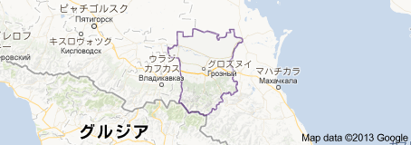

2013/05/25
私たち次第でテロは無くせる
私たちとテロは遠い存在ではない

旅客機が世界貿易センタービルに突っ込んだ９１１、同時多発テロ。
このテロで、日本人も亡くなった。私の叔父の知り合いが、その突っ込んだ旅客機に客として乗っていて帰らぬ人となった。
また、奇跡的に被害にあわなかった例がある。世界貿易センタービルに住んでいたある人は、ちょうどその時に数ブロック
離れた友人の家を訪ねていた。もちろん、そのおかげでテロに巻き込まれることはなかった。
平和な日本に暮らしていても、いつテロの被害に逢うかはわからない。
現に、同時多発テロの首謀者ウサマビンラディン率いるアルカイダは標的の一つに日本も入れていた。

ただ現在、テロ組織はアフリカで活動している。


いわばアフリカが、世界貿易センタービルで、日本は、数ブロック離れた友人の家だ。
なので、みんな安心しているだろう。
新たなる脅威

しかし、今、新たなテロの脅威が起きてきている。ホームグロウンテロだ。
以前の組織によるテロは、ＣＩＡをはじめ各国の情報機関の活動で、事前に気付くことが出来た。
「ホームグロウンテロ」、自国育ちのテロは、国内の住民がテロを独自に引き起こす。
最近でも、ニュースでやっていた２つのテロ事件が、この「ホームグロウンテロ」だった。

先月４月１９日
アメリカ、ニューヨーク州ボストンでボストンマラソンを狙ったテロ
アメリカ育ちのチェチェン人２人による犯行だった。


兄はボクサー、弟はマサチューセッツ工科大学（MIT)に通う大学生だった。

チェチェン共和国は、イスラム過激派が多い国らしい。だがボストンテロは、過激派思想でやったものではないと言われている。
でも、彼らふたりの感情には、「イスラム教徒で過激派が多い国出身」ということだけで、周りからの差別があり、心に傷を持っていたのではないかと
私は思う。
その反抗心から、このテロを引き起こしたのではないだろうか。
今月５月２２日にも、イギリス、ロンドンのウーリッジで「ホームグロウンテロ」が起きた。
ナイジェリア系の男性２人がイギリス兵士を刺殺した。

果たして、この問題は、国家間の争いや宗教だけが原因なのだろうか？
私たち次第でテロは無くなる


私は小学生の頃、親の仕事の帰りが遅いとき知り合いのコロンビア人家族の家で帰りを待たせてもらっていたことがあった。
ある日、その人たちと銭湯に行ったときがあった。そこで私は、同年代ぐらいの子供に、外国人と一緒にいるということで水をかけられた思い出がある。
コロンビア人の父親は、自分自身が原因だと思い、すまなそうな表情をしながら私に、「こっちにおいで」と引き寄せる以外に、取れる方法はなかった。
そのことをきっかけとして私は、外国人の肩身の狭さと、周りからの醜い「差別」を知ることができた。
いつしか、親の帰りも早くなり、そのコロンビア家族に面倒を見てもらわなくなっていた。
そのコロンビア家族自身も他の市へ引越していた。だが、その後そのコロンビア家族は様々な問題にあい、
それに対抗したところおおごとになってしまい国へ強制送還されてしまったらしい。
そういう事を知っている私は、「ホームグロウンテロ」を起こした者たちは、「一人の人間としての個人」であるときに受けた「ひどい体験」が
彼らの心を傷つけ、その後、テロへの道へ進ませたのではないかと思う。
外国人と接したことのない人間は、恐怖のあまり外国人というだけで攻撃するものだ。
その攻撃を受けた外国人は、被害を受け続けるままではいられないだろう。同じ人間なのだから、どこかでふっきれてしまう。
それが全てだと思う。

想像してみてくれ、あなたが人から正当な理由なく差別や攻撃をされたら。
そのとき、あなたはどんな行動に出れるだろうか？
そして周りにいる私たちに出来ることはなんだろうか？
私は待ち遠しい。
より多くの人がこの事を理解し
お互いの違いを認めあい、無知から起きる「差別」がこの世界から消える日が来ることを。